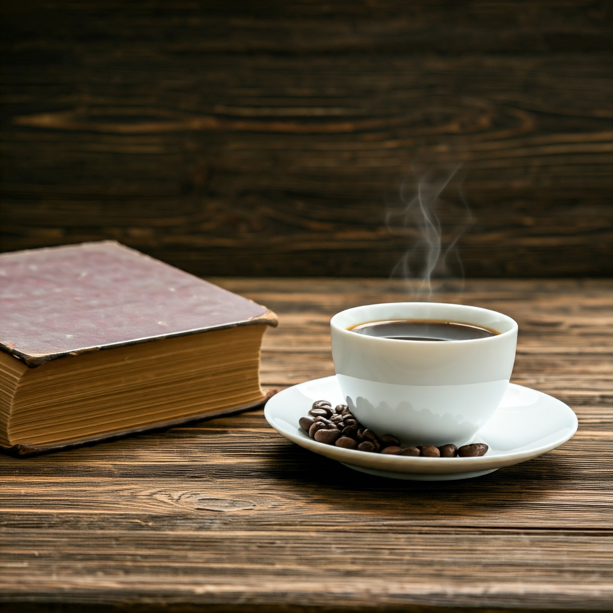
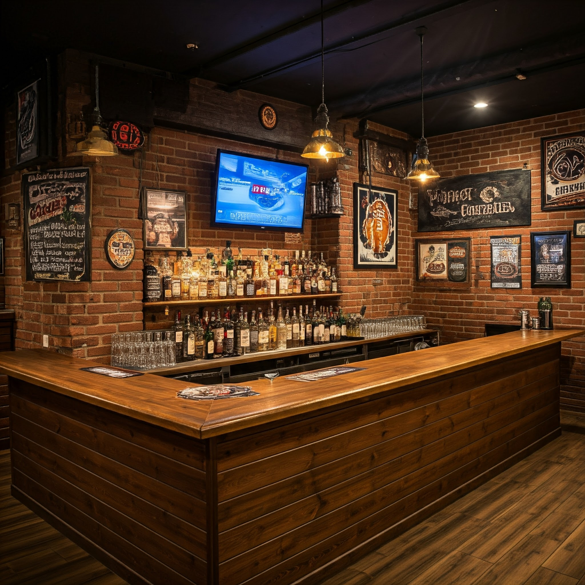
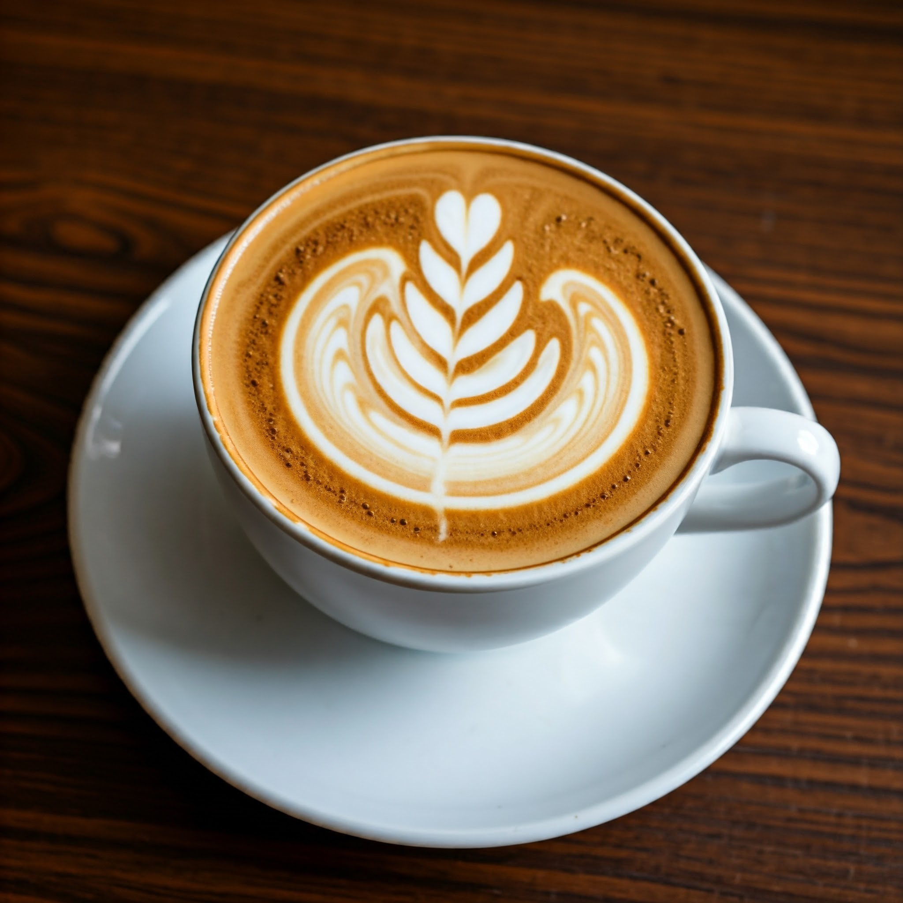

La taza perfecta
¡Bienvenido a nuestro blog de café! Esperamos que te sumerjas en el mundo del café y descubras nuevos sabores y aromas.

El café un elixir para el alma
Además de la información práctica, en nuestro blog encontrarás artículos sobre la cultura del café, los beneficios para la salud y las experiencias más memorables relacionadas con esta bebida.

Una experiencia sensorial
En nuestro blog, exploramos el mundo del café desde diferentes perspectivas, desde su historia y origen hasta las diversas formas de prepararlo y disfrutarlo.